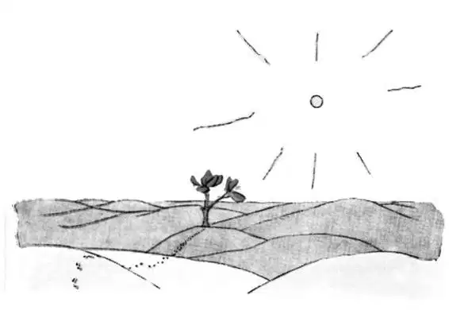

CHAPTER 18
第十八章
—the little prince goes looking for men and meets a flower
——小王子寻找人类，遇上一朵花
The little prince crossed the desert and met with only one flower. It was a flower with three petals, a flower of no account at all.
小王子穿越沙漠，只遇见了一朵花。这是一朵只有三片花瓣的花，一朵渺小而毫不重要的花。
"Good morning," said the little prince.
“早上好。”小王子说。

"Good morning," said the flower.
“早上好。”花儿答道。
"Where are the men?" the little prince asked, politely.
“人们在哪里呀？”小王子有礼貌地问。
The flower had once seen a caravan passing.
花儿曾经看到一支骆驼商队路过。
"Men?" she echoed. "I think there are six or seven of them in existence. I saw them, several years ago. But one never knows where to find them. The wind blows them away. They have no roots, and that makes their life very difficult."
“人？”她重复道。“我想一共有六七个吧。几年前我见过他们。可谁也不知道去哪里找他们。风把他们吹走了。他们没有根，这让他们的生活很困难。”
"Goodbye," said the little prince.
“再见。”小王子说。
"Goodbye," said the flower.
“再见。”花儿说。